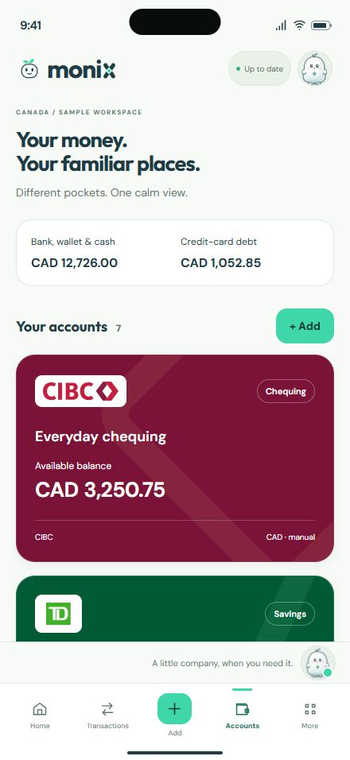
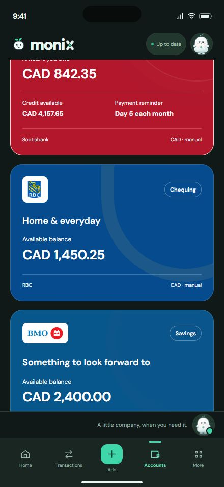
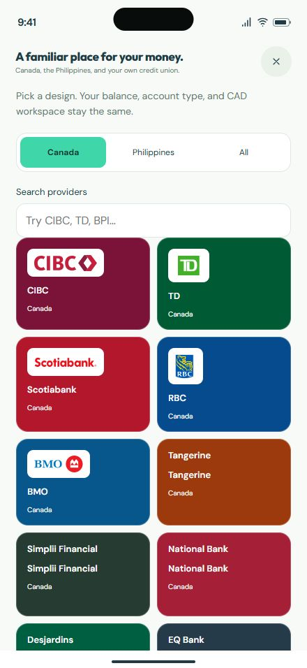

CIBC · TD · Scotiabank · RBC · BMO
iPhone 16 Pro Max440 × 956 CSS pixels · sample CAD records

Full-width cards, clear labels, and readable CAD balances.

Bank balances and credit-card debt stay distinct.

Choose a design independently of account type and currency.